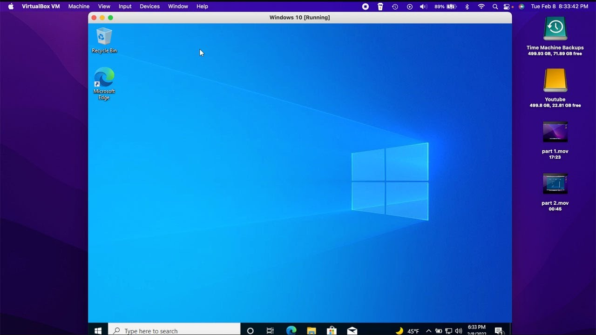

MAL-NALYSIS
Resources to get you started if you want to learn and analyze malware and malvertisements
Note: I am NOT responsible for anything that happens to your computer if you do this
For malware:
VirtualBox
— Software that lets you to run a virtual computer/OS inside your physical computer (virtual environment)
— A good tool for seeing how malware work in real time without harming your actual computer
— A lot of safety precautions have to be taken, just in case
— Needs a lot of system resources (RAM and stuff) to work efficiently

Malware Showcase Git Repository
— Created by Patrick Holop and Alvin Leung
— Contains simple and safe working malware programs created through Python
— Used to educate how types of malware work in real time with no real harm to your computer
— Only for educational purposes only!
For malvertisements:
Inspect Element
— Should be on every browser that isn't Safari; simply right-click and it will be the very last option
—— You can also press F12 (fn + F12 for Mac)
— Shows the HTML and CSS code of the website
— You can view, edit, and delete web elements, but it won't save any changes
Two Browsers
— One should be your main browser for inspecting
— The other should have all adblockers, pop-up blockers, etc. turned off